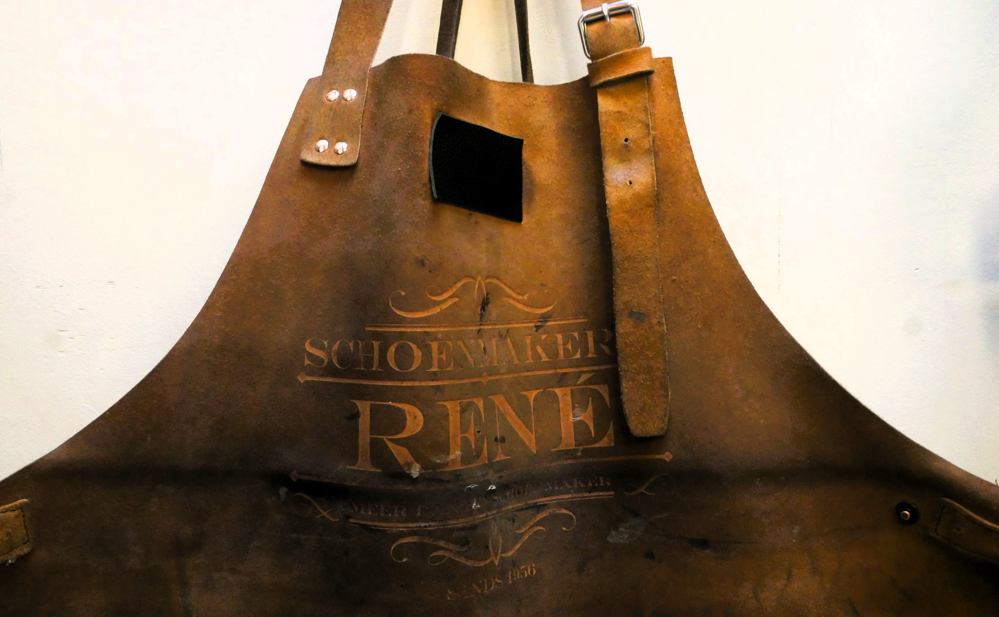

Ons werk in beeld
Galerij
Een greep uit onze gravures — op hout, metaal, leder, glas en meer.

Uitsnijding in hout

gravure op houten plank

Lasergravure op glas

Plexi gravure

Naambord op metaal

Leder

gravure voor trouw op hout

gravure huisnummer op steen

gravure nummer in plexi

gravure medaille op metaal

Doosje met laser uitgesneden in hout

gravure op glas voor restaurant